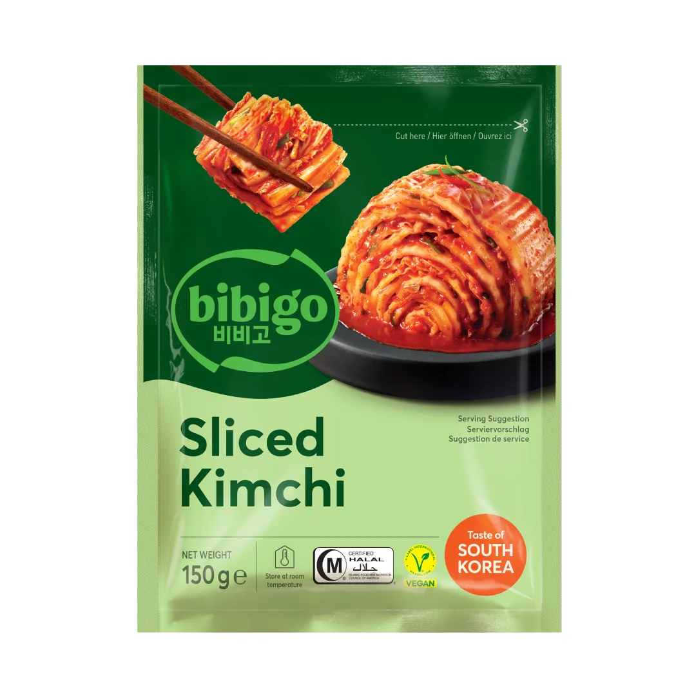
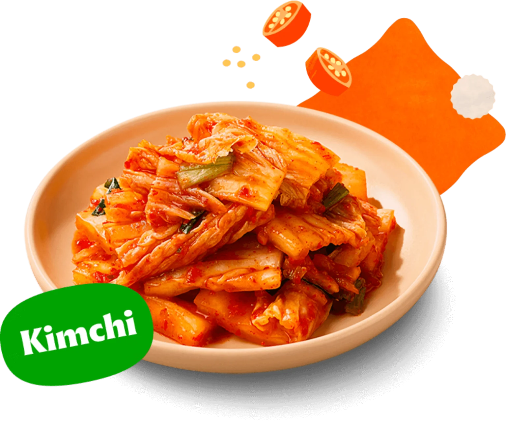
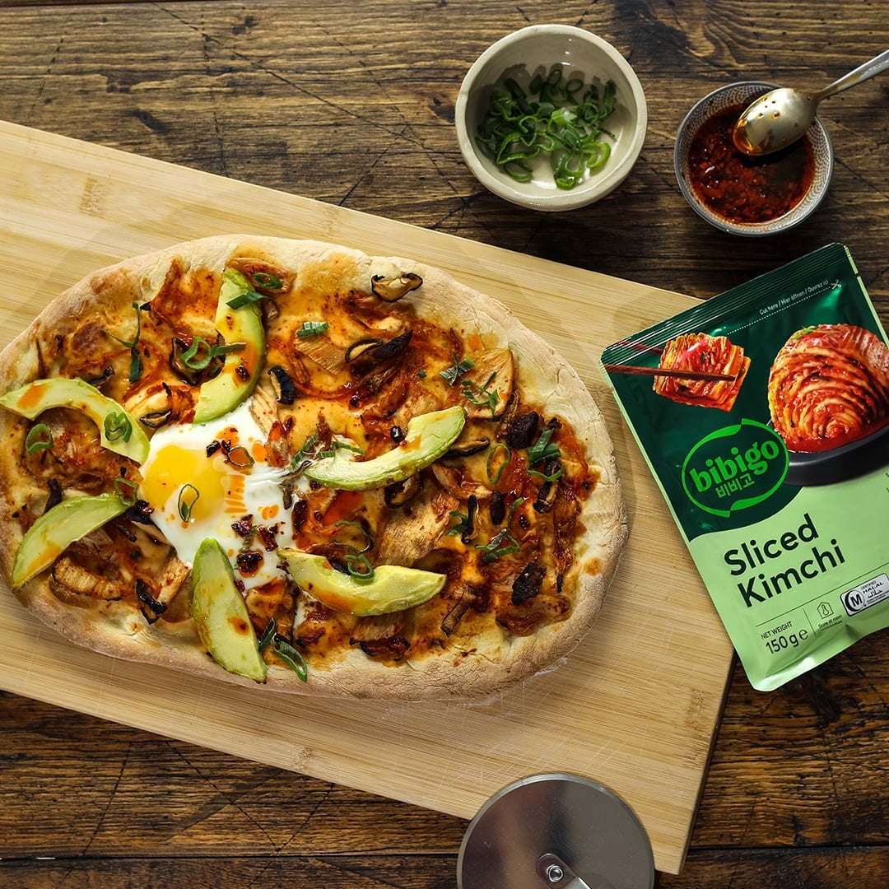

<div> <table style="border-collapse: collapse; width: 99.9809%;" border="1"><colgroup><col style="width: 49.9522%;"><col style="width: 49.9522%;"></colgroup> <tbody> <tr> <td> <div><strong><span style="font-size: 14pt;">Bibigo Kimchi feliat</span></strong></div> <div><strong><span style="font-size: 14pt;">150g</span></strong></div> <div><span style="font-size: 14pt;">Traditia coreeana, gata feliata. Bibigo Sliced Kimchi iti ofera gustul autentic al verzei fermentate dupa retete stravechi, acum intr-un format practic de 150g. Un produs premium, bogat in probiotice si arome naturale, importat direct din Coreea de Sud pentru a-ti imbogati preparatele asiatice preferate.</span></div> </td> <td></td> </tr> <tr> <td></td> <td><span style="font-size: 14pt;">Esenta gustului &bdquo;umami&rdquo; in farfuria ta. Cu o textura crocanta si un echilibru perfect intre picant, acrisor si sarat, acest kimchi autentic este garnitura ideala pentru orice masa. Fie ca il savurezi simplu, alaturi de orez, sau integrat in supe calde, aduce un plus de vitalitate si savoare pura.</span></td> </tr> <tr> <td><span style="font-size: 14pt;">Fuziune culinara fara limite. Descopera cum gustul intens si usor picant al kimchi-ului Bibigo transforma preparatele clasice intr-o delicatesa moderna. Adauga-l pe pizza, in burgeri sau alaturi de oua ochiuri pentru a aduce o nota exotica, plina de prospetime si personalitate, meselor tale zilnice.</span></td> <td></td> </tr> </tbody> </table> </div>